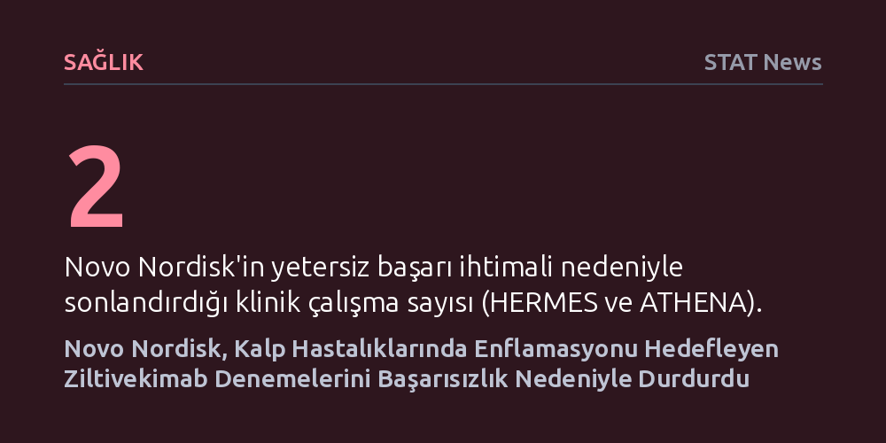

SAGLIK · STAT News · 2026-09-07
Novo Nordisk, enflamasyonu baskılayarak kalp sağlığını korumayı amaçlayan ziltivekimab etken maddeli iki klinik çalışmayı durdurdu. İlaç, kandaki yangı göstergelerini düşürmesine rağmen kalp krizi ve ölüm risklerini azaltmada başarısız oldu.
Kandaki enflamasyon göstergelerini düşürmenin doğrudan kalp krizi ve ölüm riskini azaltmaya yetmeyebileceğini, dolayısıyla damar hastalıklarında yangı hipotezinin sanıldığından çok daha karmaşık olduğunu gösteriyor.

Danimarka merkezli ilaç devi Novo Nordisk, kalp ve damar sağlığını koruma hedefiyle geliştirdiği ziltivekimab adlı deneysel ilacının iki önemli klinik denemesini durdurma kararı aldı. Şirket, HERMES ve ATHENA isimli bu geniş kapsamlı çalışmaları, bağımsız bir veri izleme komitesinin yaptığı ara değerlendirmelerin ardından sonlandırdı. Komite, mevcut veriler ışığında araştırmaların hedeflenen klinik başarıya ulaşma ihtimalinin kalmadığını tespit etti.
Alınan bu kararın ardından Novo Nordisk, klinik çalışmayı yürüten merkezlerdeki baş araştırmacıları resmi olarak bilgilendirdi. Şirketin kardiyovasküler alandaki en iddialı projelerinden biri olan bu iki denemenin vaktinden önce kapatılması, hem şirket hem de benzer mekanizmalar üzerinde çalışan biyofarma sektörü açısından ciddi bir hayal kırıklığı yarattı.
Ziltivekimabın karşılaştığı bu son engel, ilacın ilk klinik başarısızlığı değil. Bu adım, ilacın daha önce tamamlanan ZEUS adlı klinik denemesinde elde edilen olumsuz sonuçların hemen ardından geldi. ZEUS çalışması, kardiyoloji dünyasında uzun süredir tartışılan önemli bir biyolojik çelişkiyi somut bir biçimde gözler önüne sermişti.
Söz konusu ZEUS denemesinde ilaç, kandaki enflamasyon belirteçlerini belirgin biçimde aşağı çekmeyi başarmıştı. Ancak laboratuvar verilerindeki bu olumlu tablo klinik sonuçlara yansımadı; hastaların kalp krizi geçirme, inme yaşama veya yaşamını yitirme gibi majör kardiyovasküler komplikasyon risklerinde anlamlı bir azalma sağlanamadı. Laboratuvar düzeyindeki biyokimyasal iyileşmenin hastanın hayatta kalma şansını artırmaması, ilacın etkinliğine dair güveni temelden sarstı.
Kardiyoloji camiasında yıllardır damar sertliği ve kalp krizlerinin arkasındaki temel itici güçlerden birinin kronik yangı, yani enflamasyon olduğu savunuluyordu. Ziltivekimab denemelerinin arka arkaya başarısızlıkla sonuçlanması, doğrudan yangıyı baskılayarak kardiyovasküler riskleri azaltma stratejisine vurulmuş yeni ve sert bir darbe niteliği taşıyor.
Bu gelişmeler, kandaki enflamatuar molekülleri ilaçla düşürmenin tek başına klinik fayda sağlamaya yetmeyebileceğini gösteriyor. Araştırmacılar artık yangının kalp hastalığının doğrudan sebebi mi, yoksa altta yatan başka patolojik süreçlerin bir yan ürünü mü olduğunu daha derinlemesine sorgulamak zorunda kalacak.